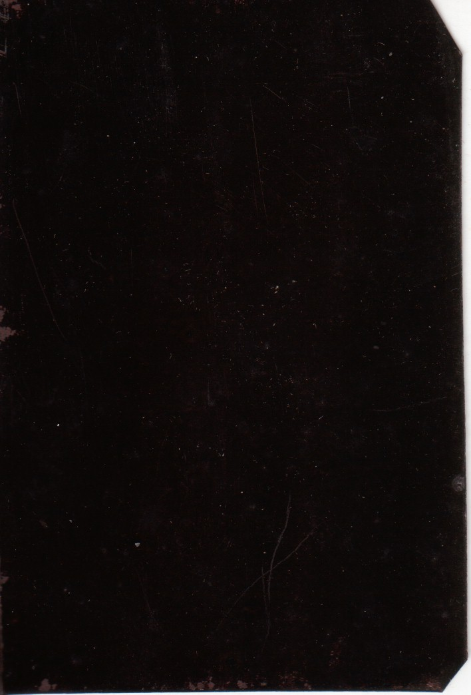
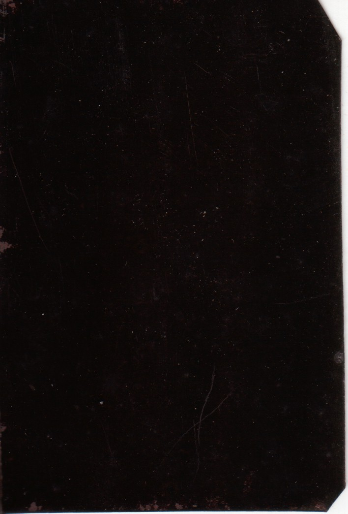
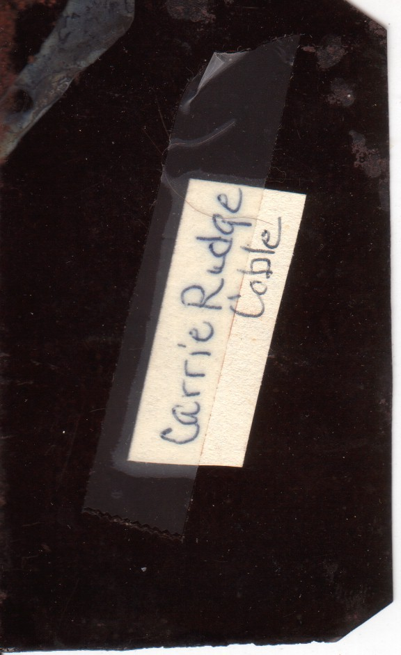
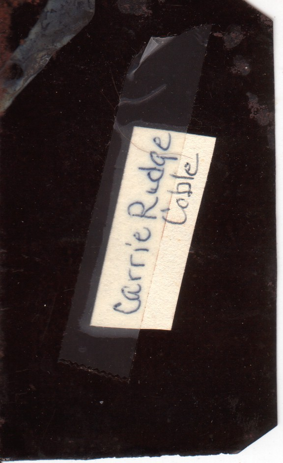

Photos of CAROLINE VIRGINIA NEE RUDGE COBLE (1874-1962)
This is a collection of photos of Caroline Virginia nee Rudge Coble that are scattered amongst the photo albums on this site. They are presented in apparent chronological order. (Her appearance changed quite a bit over the course of her life; but fortunately most of these photos are labeled.) Click on the bookmarks below to be taken to that photo.
This is a tintype of two young girls. I think these are Caroline Virginia nee Rudge Coble and her older sister Betty Louise Rudge.


This is a tintype of two young girls. I think these are Betty Louise Rudge and her younger sister Caroline Virginia nee Rudge Coble. Betty died on 27 Jun 1879, so this photo must have been taken earlier.
 

This is a tintype of a girl. The name written on the back states "Carrie Rudge Coble". Notice the last word appears to have been added later, i.e. after she married.
 

This is a photograph of Caroline Virginia nee Rudge Coble when she was a small girl.

According to writing on the back of this photo, it was taken in Monroe, NC.
This is a photo of young woman. On the back it reads "Carrie Rudge Coble".


Here is a group photograph that appears to be a staged photo from a play they might have been in. William John Rudge and his sister, Caroline Virginia nee Rudge Coble appear on the right side.

This is a photograph of Caroline Virginia nee Rudge Coble. On the back it reads "Jennil [?] to her friend [?] C.V.R". I've independently discovered an 1888 Richmond city directory entry for her father, John William Rudge, so it is possible that this was taken when the family lived there. If so, she would have been 14 years old. But family had relatives on the Pae side that lived in Richmond, so this could also have been taken on a visit.


This is a photograph of the front of the first Belk store (New York Racket) in Monroe, NC, where Caroline Virginia Rudge and her brother William John Rudge were employed. While some sources claim the photo was taken in 1897, an old newspaper (Monroe Enquirer 1 Sep 1938) quotes Henry Belk as implying it was taken ca. 1890. From left to right: 1. Carrie Rudge, 2. Henry Brown, 3. Dr. Redfearn, 4. Ed Austin, 6. Will Rudge, 7. Henry Walkup, 8. Unidentified man in doorway, 9. Billy Benton. (Will Rudge would have been about 14 in 1890, and this seems correct.)
Here’s a photograph of Louise Rudge Coble and her mother, Caroline Virginia nee Rudge Coble. Louise appears to be about 1 or 2 years old, and so this photo was taken ca. 1915.
Here's a photograph of the "J. B. Coble Family. Standing (l-r) Paul Bunyon Coble, John Coble, Harry Coble, Emmett Rudge Coble (oldest), Wesley W. Coble, Seated (l-r) John Bunyon Coble, David Lamar Coble, Louise Coble, Carrie Rudge Coble, Carolyn Coble." If Louise was 3 years old, this photo would have been taken ca. 1916.

This photo is among a group of photos taken in the early 1920s by William Jerome Rudge Jr.
Back row: Wesley Wendall Coble, Moma [Caroline Virginia nee Rudge] Coble, Paul Coble, Caroline Virginia nee Coble Jones, Katherine Erma nee Rudge Griffith. Front row: James Thomas Griffith Jr., James Thomas Griffith Sr., Wilson Kenneth Jones, Kenneth Wilson Jones. If Kenneth was 5 years old, this photo would have been taken in 1934.

Here's a photograph of the Cobles. Top: Paul Coble, -, Carrie R. Coble, Caroline Jones, Kate Griffith, Bottom: James Griffith, James Griffith sr., Wilson Jones, Kenneth Jones April 1934.

This is a group photo of six individuals, only three of whom are identified on the back. Back row, from left to right, are Caroline Virginia nee Rudge Coble, her daughter, Caroline Virginia nee Coble Jones. In the middle is Kenneth Wilson Jones Jr. If Kenneth was 11 years old in this photo, it would have been taken ca. 1940.


This appear to be a black and white photo of Moma Coble. The back was completely blank.

On the front this photo identifies those depicted as "Moma [Caroline Virginia nee Rudge Coble] Lou.[Louise Rudge nee Coble Bareford] Caro. [Caroline Virginia nee Coble Jones] Ken [Kenneth Wilson Jones] Jewell [Jewell nee Kraus Coble]". On the back, this photo is labeled "May 28 1944 at Harry and Jewell 's home".


This photo is labeled "Caroline Coble Kenneth Jones Moma ? ? ". The two unidentified individuals appear to be Jewell nee Krauss Coble and Harry Woods Coble. Another photo that appears to be taken on the same day is dated 28 May 1944.


On the back of this photo is written "These were taken about six years ago. Don't know if you all saw them, but thought they were good of Moma. I believe the last ones she posed for. The others in the picture aren't so good so don't look at us. Moma Coble in center." The woman on the left appears to be Hope Helene nee Reinhard Coble. The man is John Bunyan Coble Jr. The boy in Hope's arms is their son David Coble. The boy standing is their other son, Ronald. Judging from the children's ages, this was probably taken ca. 1950.


This is a black and white photo of Moma Coble. The back was completely blank.

According to the back this photo was also developed in February 1959.


According to the back this photo was developed in October 1965, but it appears to have been taken around Christmas time.


According to the back this photo was also developed in October 1965.


Caroline Jones is on the left, her mother on the right. The parakeet was named Petey. The photo was developed in November of 1965.


Back to the Coble Genealogy Page
Last updated on 18 Jan 2013